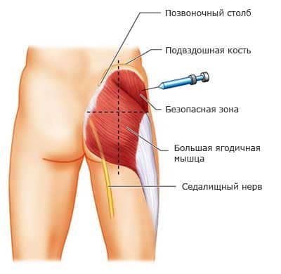

Начнем с констатации элементарного – любое лекарственное вещество, дабы определенное лечебное действие оказать, должно для начала попасть в человеческий организм. Лекарство можно нанести на кожу, его можно выпить (вариант – съесть), можно поставить клизму или ввести свечу, можно, в конце концов, уколоть. «Уколоть» – это по-нашему, по-человечески. На медицинском языке указанный процесс называется «инъекция». По большому счету, под инъекцией понимают любое введение в организм жидкости с помощью шприца.
Инъекции бывают разные, но наиболее часто встречаются три их разновидности – подкожные (п/к), внутримышечные (в/м) и внутривенные (в/в). Воздействие препарата на организм начинается только после того, как он (препарат) попадает в кровь. Под кожей сосудов значительно меньше, чем непосредственно в мышце, поэтому эффект от введения наступит заметно позже, а эффект от в/в инъекции – почти мгновенный.
Суть подкожной инъекции – игла и, соответственно, лекарство вводятся под кожу (между кожей и мышцей). Это необходимо в тех случаях, когда немедленный эффект от лекарства не нужен. Так, например, вводится знаменитый инсулин, именно п/к делается подавляющее большинство прививок. Наиболее удобно делать п/к инъекции в те участки человеческого тела, где кожа легко оттягивается и берется в складку – бедро, боковая поверхность живота, плечо, под лопатку.
Внутримышечные инъекции – самые распространенные. Тысячи жителей нашей страны, говорящие: «укол я и сам (сама) сделать могу», имеют в виду в/м введение лекарств. Излюбленное место для этих инъекций – ягодицы (попа), хотя возможны варианты (плечо, бедро). В/м вводят большинство вакцин, антибиотиков, витамины, спазмолитики, жаропонижающие средства. В силу своей простоты и быстроты, именно в/м введения чаще всего используют врачи и фельдшеры «скорой помощи» – снять боль, «сбить» температуру, понизить давление, успокоить.
Внутривенно – это всегда серьезно. Требуется быстрое лечебное действие, вводятся активные препараты. В/в инъекции чисто технически довольно сложны, но для квалифицированной медсестры и тысяч наркоманов они не представляют собой чего-то из ряда вон выходящего. В/в введение во временном аспекте может быть коротким (лекарства шприцем медленно вводится в вену – медики говорят «струйно»), но бывают ситуации, когда объем лекарственного средства велик или препарат лучше действует при очень медленном введении в сильно разведенном виде; тогда ставят капельницу – с помощью специальной системы для инфузий (инфузия – это, по-медицински, как раз и есть введение больших объемов жидкости).
Тремя перечисленными видами инъекций выбор не ограничивается. С диагностической целью некоторые вещества вводят внутрикожно (в/к) – так, например, ставится проба на инфицирование туберкулезом – знаменитая и всем знакомая реакция Манту; так выясняют, а нет ли повышенной чувствительности к антибиотикам; обязательную в/к пробу делают перед введением лечебных сывороток, например противодифтерийной.
Бывают и другие инъекции – в полость сустава при некоторых артритах, в спинномозговой канал при менингитах, непосредственно в нервные стволы при обезболивании (например, в стоматологии).
Как-то уж так повелось, что лечение с помощью уколов общественное мнение однозначно рассматривает как более эффективное, в сравнении с микстурами и таблетками. Кстати, именно с инъекциями часто связана потребность в госпитализации: ну что это за лечение в больнице, если не поставить несколько капельниц – таблетки ведь можно и дома глотать.
В то же время с любыми уколами связан целый ряд опасностей, осложнений и неприятностей. И иглы, и шприцы, и лекарства, и инъекции делают люди. Люди могут ошибаться. От ошибок никто не застрахован, но кое-какая информация может оказаться совсем не лишней.
1 Уколы – неприятно, больно, страшно.
2 Лечиться уколами всегда дороже, чем таблетками. При этом речь идет не только о непосредственной цене конкретного лекарства, но и о резко увеличивающихся затратах на оплату труда медицинских работников (теоретически, наличие якобы бесплатного государственного здравоохранения делает этот пункт для конкретного человека не актуальным).
3 Риск заноса инфекции – если, к примеру, стафилококк может попасть в организм человека как угодно (и через рот, и воздушно-капельным путем, и при инъекциях), то целый ряд болезнетворных микроорганизмов передается только через кровь, а самые известные среди них – вирусный гепатит В и ВИЧ. Понятно, что первооснова этих болезней – человеческий фактор: нарушение стерильности при проведении инъекций, недостаточное обследование доноров при производстве препаратов, которые делаются из крови.
4 «Технические» осложнения – ввели «не туда» или «не то» (нечаянно, отвлеклись, не получилось, так получилось).
5 Местные реакции тканей: от красноты и болезненности в месте инъекции до абсцессов, которые потом вскрывают.
6 Непосредственные общие реакции на введения – могут быть связаны со специфическим или побочным действием конкретного препарата (например «горячий укол» хлористого кальция) и часто бывают очень неприятными.
7 Аллергические реакции – не редкость и при приеме таблеток, но лекарство, введенное инъекционно, вызывает реакцию более сильную и более быструю, вплоть до самого страшного варианта аллергии – анафилактического шока.

С учетом семи перечисленных пунктов становится понятной наметившаяся во всем мире тенденция к тому, чтобы максимально ограничить количество инъекций. Лучшие фармакологи ведущих фирм видят свою задачу в том, чтобы создать препараты, быстро и эффективно действующие при приеме через рот. Полностью отказаться от инъекций вряд ли удастся, особенно при лечении неотложных состояний, но свести к минимуму количество, предельно сузить показания – это задача вполне посильная.
К огромному сожалению, главным фактором, часто не позволяющим отказаться от ненужных уколов, является общественное мнение, образ мышления конкретного рядового нашего соотечественника.
Примеры народной мудрости: «уколы лучше, чем таблетки», «врач, который не назначил уколы, лечить не умеет», «приехала «скорая» – даже ничего не укололи», «наш невропатолог очень невнимательный – пошли к нему на прием, так он даже витамины поколоть не назначил».
Врач хочет, чтоб его любили, уважали и ценили. Если для любви и уважения следует назначить капельницу – удержаться от соблазна очень тяжело.
Если врач приписал уколы и не помогло – значит, не судьба… Если врач назначил таблетки и не помогло – значит, надо было уколы назначать. Только так, и не иначе.
Бороться с общественным мнением – дело почти безнадежное. У вас болит голова? Мы вам назначим магнезию. Поверьте, после 5 уколов боли в области ягодиц будут настолько сильными, что про головную боль вы забудете автоматически. Вы хотите витаминов? В1 и В6 через день в/м. Ради бога.
Кому охота доказывать, что современные антибиотики позволяют 80–90 % воспалений легких вылечить без инъекций; что витамины группы В прекрасно всасываются из кишечника и колоть их следует только тогда, когда кишечник не работает; что ни в одном современном зарубежном справочнике нет указаний на то, что глюконат кальция следует вводить в/м; что любимый народом гемодез уже давно нигде в мире не производят?..
Особенно остро стоит проблема инъекций применительно к детям. Именно уколами детей пугают и именно про уколы начинают говорить с врачом в тех случаях, когда назначенные внутрь лекарства не приносят мгновенного облегчения.
Благодаря детскому «не хочу» появились и появляются современные лекарства с приятным вкусом: в виде суспензий, капель, сиропов, жвачек, «сосательных» конфет – лишь бы согласились, лишь бы не причинять ребенку ненужную боль.
В то же время успехи современной фармакологии не являются достоянием широких народных масс и передающуюся от поколения к поколению веру в чудодейственные уколы очень трудно поколебать. А у замотанного писаниной, запуганного начальством и уставшего от бытовых проблем врача нет ни сил, ни времени, ни желания проводить разъяснительную работу, которая, к тому же, часто оказывается безрезультатной. Поэтому, диагностировав воспаление легких, врач с легким сердцем назначит уколы.
Нельзя не отметить, что вера больного, его убежденность в правильности лечения, его доверие к врачу – важнейшие ступеньки на пути к выздоровлению. И, как это ни парадоксально, но инъекции очень часто вызывают не только боль, но и формируют благоприятный психоэмоциональный фон, способствуя большей эффективности терапии (как тут не позавидовать американцам, у которых на каждого терапевта по психотерапевту).
Итогом же настоящей главы является вывод о том, что любые инъекции лекарственных препаратов имеют совершенно определенные показания:
1 Необходим немедленный лечебный эффект.
2 Лекарственное средство не может быть введено через рот, потому что разрушается в желудочно-кишечном тракте или не всасывается в кровь.
3 Лекарство можно выпить, но сделать это нельзя – отсутствие сознания, рвота или просто уже упомянутое нами детское «не хочу».
4 Конкретный лечебный эффект конкретного препарата более выражен или более продолжителен при инъекционном введении.
Е.О.Комаровский. "Здоровье ребенка"